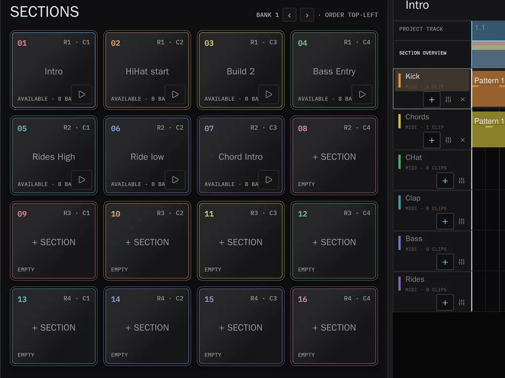
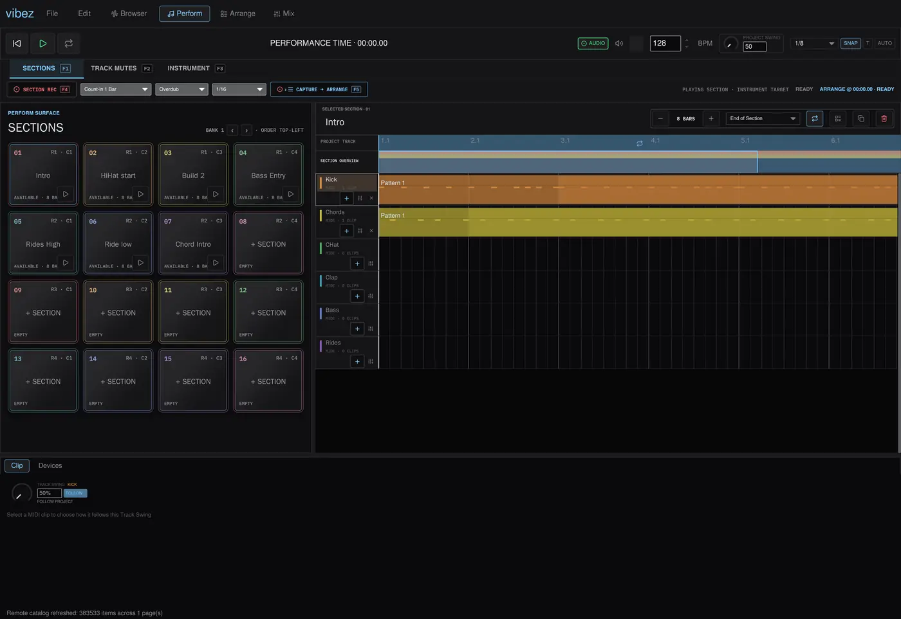
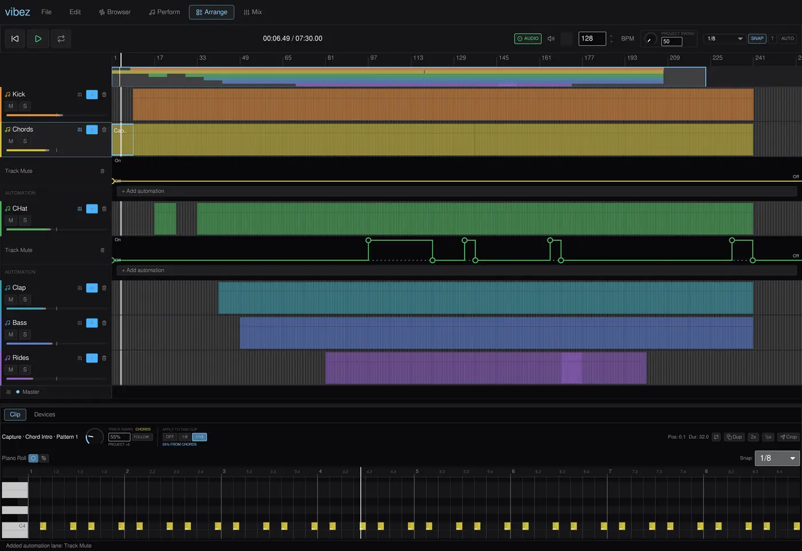
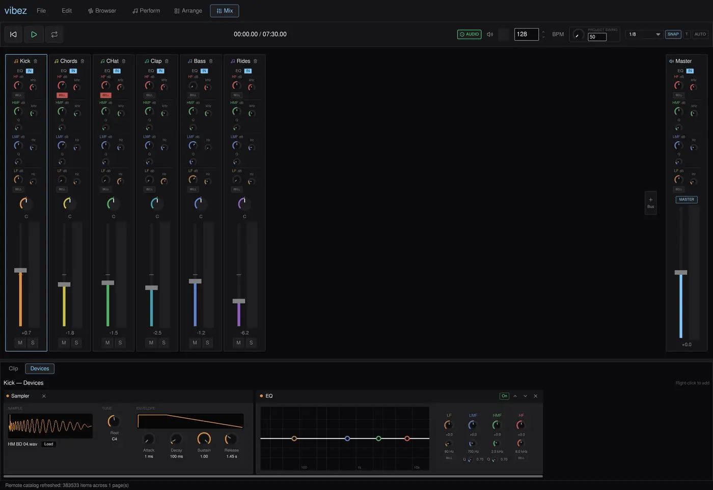

Open source DAW · written in Rust
Perform → Arrange → Mix
One track, three workspaces, in that order. You Perform it from a pad grid, you Arrange what you played on a linear timeline, and you Mix it on a real console. Capture is the hinge between the first two: it turns a live performance into editable arrangement.
Press a key, or click a pad
The real grid uses the same keys: 1234 / QWER / ASDF / ZXCV, rebindable in the app.

Perform
Workspace 01Sections are reusable multitrack loops that share your project's tracks, instruments, effects and mixer. You author one with the same editor you use in Arrange, then launch it from the pad grid. The same 16 pads do three jobs, and F1 to F3 pick which.
- Sections modeLaunches on a musical boundary: immediate, 1 beat, 1 bar, or end of section. A Section triggered slightly late still lands where you meant it.
- Instrument modeThe same 16 pads become a playable instrument for the selected track, with Full Level, 16 Levels and Note Repeat.
- Track Mutes modeMute and unmute tracks on that grid, through an anti-click ramp so tails gate cleanly instead of clicking.
- SwingModelled on the MPC2000XL. Set it per project, per track, or per clip, and automate it.

Arrange
Workspace 02 · where the performance landsArrange is the linear timeline. Multi-track audio and MIDI, clip drag, resize, split and join, time selection, looping, an overview minimap, warping with tempo follow, a piano roll, and automation across tracks, devices, plugins, buses, sends and master.
Capture is how a performance gets here F5
Capture records an entire performance, Section launches, live playing, mutes and automation gestures, and writes it into Arrange as ordinary clips and automation lanes you can edit afterwards. It is timed against the audio engine's sample clock, not the UI frame rate. Captured material keeps no reference back to its Sections, so editing a Section later never rewrites a take you already recorded, and everything Capture writes is material you could have drawn by hand.

Mix
Workspace 03A real console rather than a row of faders. Every channel has its own four band EQ, pan, fader, metering, mute and solo. There are buses, returns and sends, the master is an actual channel, and the device rack below follows the selected one. It hosts the built-in synth, sampler and drum rack alongside VST3 and CLAP plugins with their native interfaces.

Keys
The whole keyboardThe pads are the four rows in the middle of the keyboard. Everything else is transport and editing, and the app never steals a key from a text field you are typing in.
Perform
Transport and view
Arrange and clips
Piano roll and Browser
On a Mac, press Cmd. Everywhere these tables say Ctrl, macOS uses Cmd instead. The app resolves a single command modifier per platform, so a shortcut never wants Cmd for one thing and Ctrl for another.
What it does not do yet
v0.1.1It is an alpha and worth saying so plainly. Linux is the primary development platform; macOS and Windows build and pass CI on every change but get less hands-on testing. Projects save to a self-contained versioned container, but breaking format changes are still possible.
MIDI input. One port at a time, notes only, into the selected instrument track. The pads are computer keys today; controller mapping is the next milestone.
Recording. No audio input, no MIDI recording, and no MIDI output. Section Record and Capture work on what the app itself plays.
Safety nets. No autosave or crash recovery yet, and no audio fades or crossfades.
Download v0.1.1
Released 29 July 2026Direct downloads. Nothing is code signed yet, so macOS and Windows will both want a word with you the first time.
Linux
x86_64
Make the AppImage executable first:
chmod +x vibez-v0.1.1-linux-x86_64.AppImage
./vibez-v0.1.1-linux-x86_64.AppImage
macOS
Apple silicon and Intel
vibez is not notarised with Apple, so macOS will refuse to open it. After dragging it
to Applications, clear the quarantine flag:
xattr -dr com.apple.quarantine /Applications/vibez.app
You can also allow it under System Settings, then Privacy & Security, after the
first blocked attempt.
Windows
x86_64
The installer is unsigned, so SmartScreen will show a blue warning. Choose
More info, then Run anyway.
Or build it yourself
You need a stable Rust toolchain and, for the time stretcher's C++ build, a C++ compiler and libclang. On Linux, also install the audio and device headers.
sudo apt install libasound2-dev libudev-dev libdbus-1-dev
git clone https://github.com/alexanderwanyoike/vibez
cd vibez && cargo run --release
Then open assets/demo.vibez from the File menu to hear something
immediately.